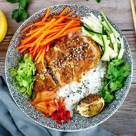

Platillos |
||||
|---|---|---|---|---|
| # | Platillo | Ingredientes | Imagen | |
| 1 | Sushi | Pescado o marisco,arroz, alga | ||
| 2 | Ramen | Fideos en caldo, generalmente con trozos de carne | ||
| 3 | Tempura | como mariscos o verduras, rebozados y fritos hasta obtener una textura crujiente. | ||
| 4 | Yakitori | Brochetas de pollo a la parrilla con salsa tare, a menudo servidas con cebolla o pimiento. | ||
| 5 | Donburi | Cuencos de arroz cubiertos con diversas guarniciones. |  | |